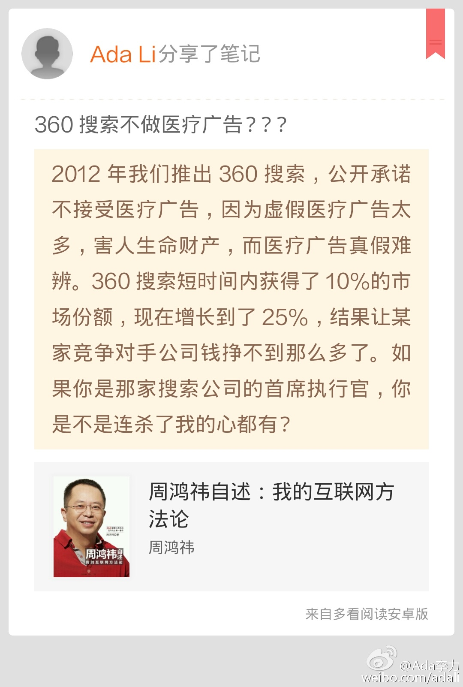
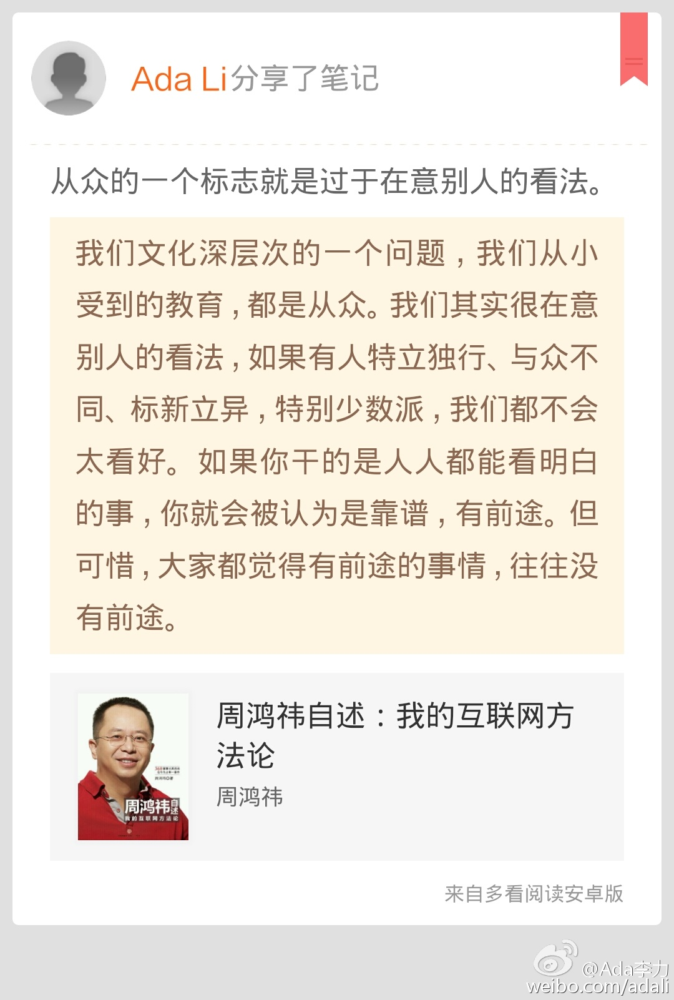

360搜索不做医疗广告？？？//#多看笔记# “2012年我们推出360搜索，公开承诺不接受医疗广告，因为虚假医疗广告太多，害人生命财产，而医疗广告真假难辨。360搜索短时间内获得了10%的市场份... ” 摘自《周鸿祎自述：我的互联网方法论》@多看阅读 网页链接 
从众的一个标志就是过于在意别人的看法。//#多看笔记# “我们文化深层次的一个问题，我们从小受到的教育，都是从众。我们其实很在意别人的看法，如果有人特立独行、与众不同、标新立异，特别少数派，我们都... ” 摘自《周鸿祎自述：我的互联网方法论》@多看阅读 网页链接 
#姣姣#对爸爸躺床上什么也不用干的状态很羡慕，我说她可以找个假日躺个24小时试试，她跃跃欲试，很是憧憬。我又加了要求，不能下床，不能坐起来，不能翻身，还有，因为是女生，还要戴纸尿裤。姣姣听了这些要求，就说还是算了，不尝试了。